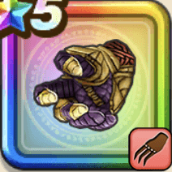

武神の剛拳
攻略班 7.5点 / せいけんづきまわしげり剛の呼吸轟瞬撃ゴッドばくれつけん心眼
くわしい特徴
【レベル別習得スキル】 Lv1【ゴドハン】攻撃力+5 Lv1会心率+2% Lv10せいけんづき（消費MP：7）腰を落としてまっすぐ拳で突き、敵1体に威力180%の体技ダメージを与える Lv20まわしげり（消費MP：8）足で周囲をなぎはらい敵全体に威力110%の体技ダメージを与える Lv25剛の呼吸（消費MP：20）自身の会心率と守備力を上げる Lv30轟瞬撃（消費MP：25）敵全体に威力340%の体技ダメージを与える(このスキルで会心の一撃が発生すると超会心の一撃になり効果が上がる) Lv33ゴッドばくれつけん（消費MP：42）敵1体に威力130%の体技ダメージを6回与える(このスキルで会心の一撃が発生すると超会心の一撃になり効果が上がる) Lv36物質系へのダメージ+5% Lv40悪魔系へのダメージ+5% Lv45攻撃力+12 Lv50心眼（消費MP：6）戦闘開始時に自身のみかわし率とガード率を上げる(効果2ターン) 【限界突破スキル】 1凸スキルの斬撃・体技ダメージ+7% 2凸スキルの斬撃・体技ダメージ+7% 3凸スキルの斬撃・体技ダメージ+7% 4凸スキルの斬撃・体技ダメージ+7%